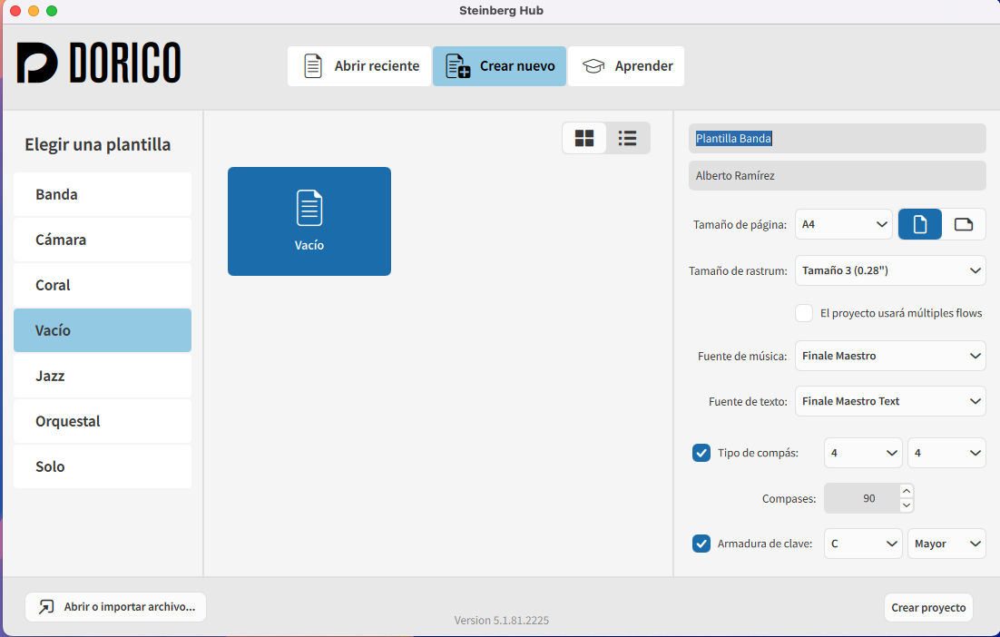
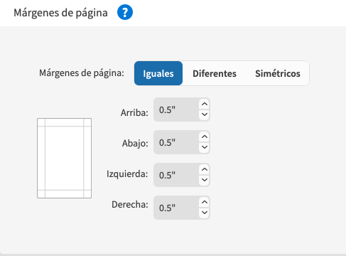
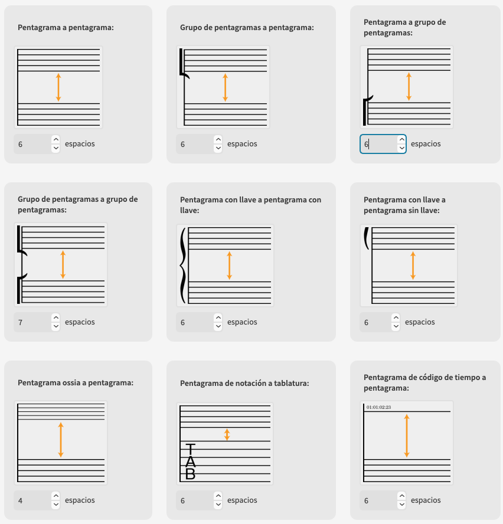
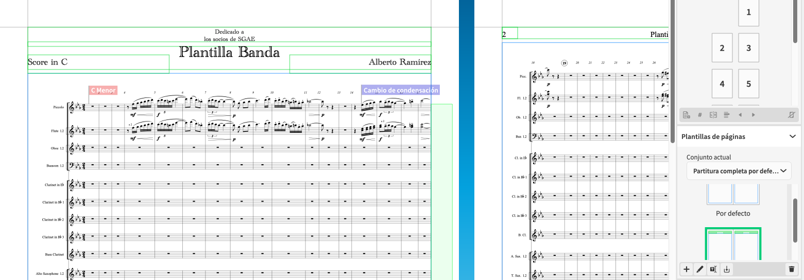
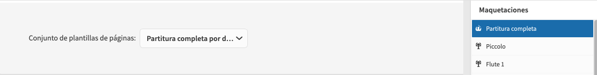
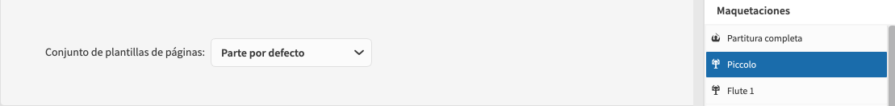
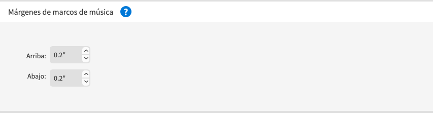

Steinberg Hub
Steinberg Hub:
Crear nuevo documento desde vacío.
(Más tarde podremos abrir otro desde plantilla personalizada y mejorar poco a poco nuestra plantilla predeterminada).
Dar nombre al proyecto y al compositor/a: Plantilla banda. Escoger tamaño de página, fuentes, número de compases, compás inicial y tonalidad inicial.

Añadir Instrumentos
- Añadir tantos intérpretes individuales o de sección como sean necesarios.
- Escoger o no, condensación de instrumentos en la partitura general.
- Si escogemos condensar, tendremos que revisar la condensación de clarinetes, trompas, trompetas y trombones.
Tenemos que excluir clarinetes aquellos que tengan más de dos intérpretes y crear nuevos grupos - Ajustar el tamaño de rastrum en configuración de página para la partitura general.
- Visualización de los intérpretes de percusión en partitura general y partes. Opciones de maquetación/intérpretes/percusión (1 línea de pentagrama, Rejilla, Pentagrama de cinco líneas)
- Ajustar los tamaños de pentagrama y espaciado vertical en grupo, así como los márgenes en la parte general y partes individuales. 
Archivo ejemplo: Plantilla Banda Instrumentos y tamaño
Plantillas de página
Trabajar el formato de la partitura general siempre desde plantillas.
El diseño para la partitura del director de plantilla completa por defecto para la primera página, y parte por defecto para siguientes.



Marcos
Existen tres tipos de marcos para insertar en nuestras partituras.
- Marcos de Música.
- Marcos de texto.
- Marcos de imagen.
Insertaremos el texto fijo o imágenes en nuestras maquetaciones por medicación de los marcos diseñados para tal efecto.
En el marco de música tendremos que tener en cuenta, ante todo, que también disponemos de márgenes para ubicar el contenido musical. Podemos distinguir el marco de música en las opciones de diseño gracias a su color azul.

Intérpretes margen izquierdo Score General
Por defecto los nombres de instrumento nos aparecen sin justificar y por defecto como viene predeterminado en el sistema en la configuración del idioma predeterminado. Los podemos cambiar en: Preferencias/General/Nombre de instrumentos/Check togle:Idioma por defecto para nombre de instrumentos.
El nombre que recibe por defecto los instrumentos es: Etiquetas de pentagramas. Podremos editarlo desde la opción de estilo de párrafos/etiquetas de pentagrama
Desde aquí podemos editar cualquier estilo en Etiquetas de pentagrama.
Por defecto los nombres de instrumento nos aparecen sin justificar y por defecto como viene predeterminado en el sistema en la configuración del idioma predeterminado. Los podemos cambiar en: Preferencias/General/Nombre de instrumentos/Check togle:Idioma por defecto para nombre de instrumentos.
El nombre que recibe por defecto los instrumentos es: Etiquetas de pentagramas. Podremos editarlo desde la opción de estilo de párrafos/etiquetas de pentagrama
Desde aquí podemos editar cualquier estilo en Etiquetas de pentagrama.
 .
. 
Nombre de parte (partituras)
La fuente a la que está enlazado el texto de Instrumentista para las partes se encuentra en:
Estilo de párrafo: nombre de maquetación.
Lo podemos mostrar con el token: {@layoutName@}
El nombre se modifica desde la parte de maquetaciones en el panel derecho de configuración. El bemol para instrumentos traspositores se consigue con el siguiente token. {@flat@}
SI queremos mostrar en las partituras el mismo nombre de instrumento ofrecido en la partitura general el token a mostrar será el siguiente: {@stafflabelsfull@}